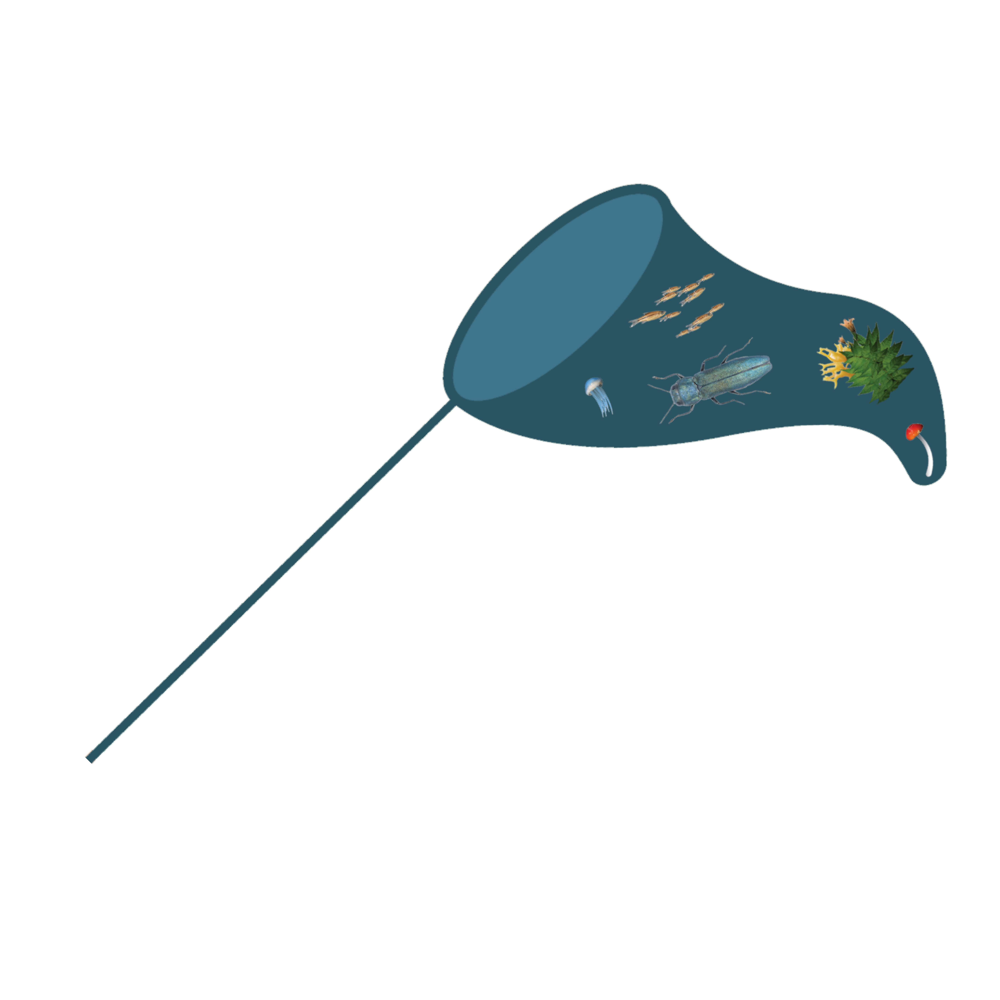
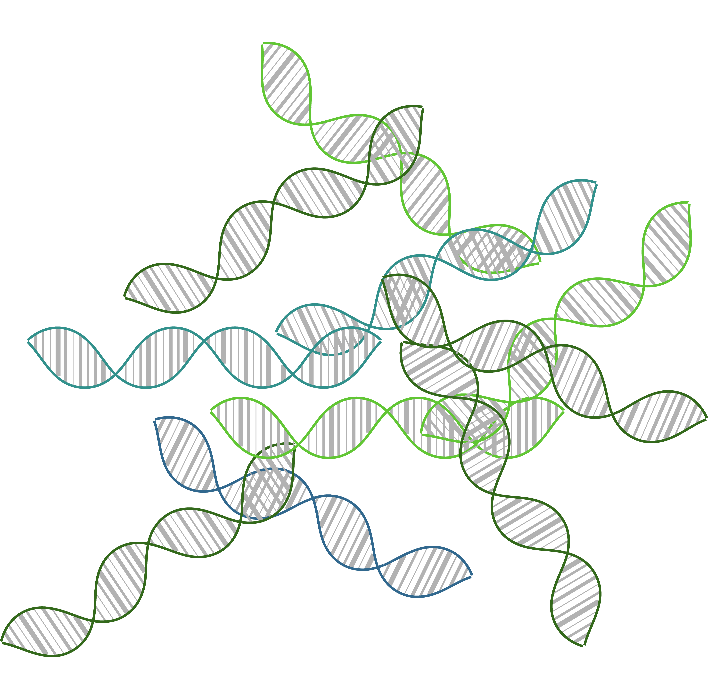
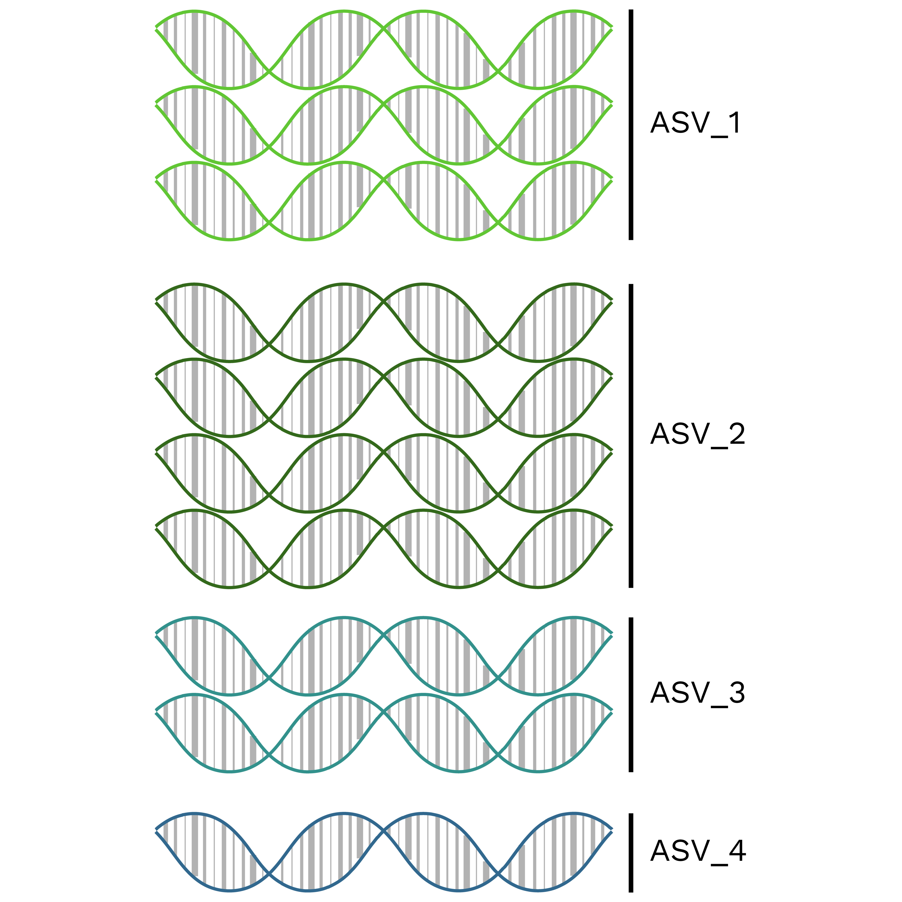
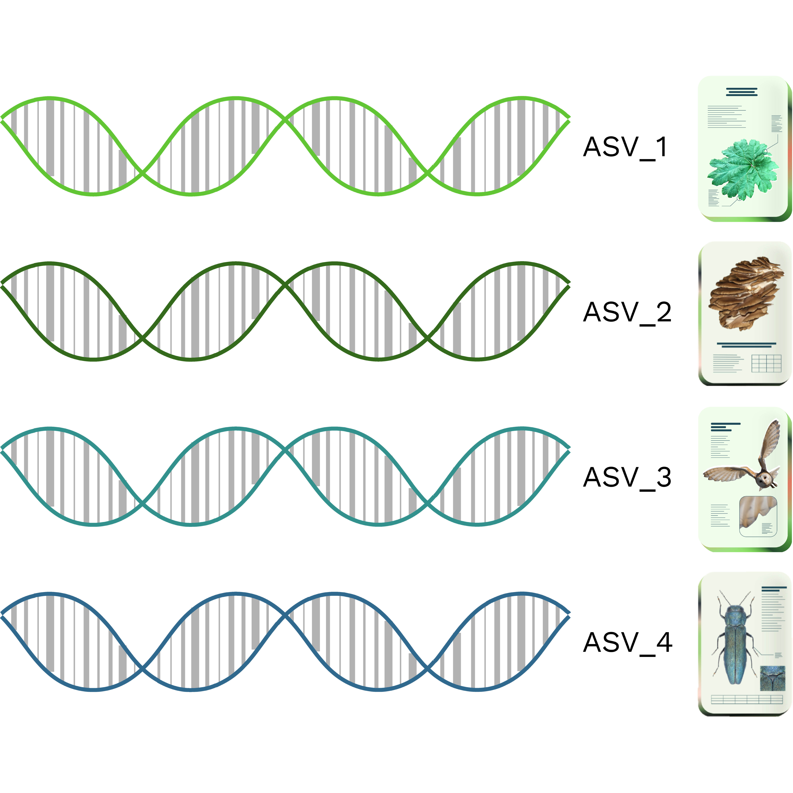
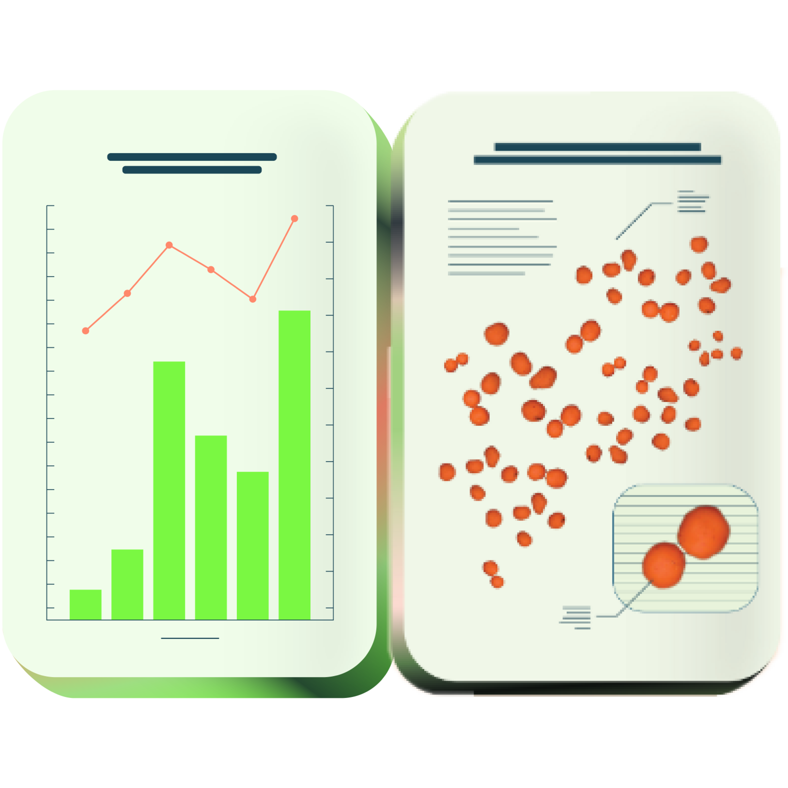

Welcome
This page aims to help with the different steps of the Metabarcoding workflow. From long-term storage and publication of raw data, the tools to generate ASV tables and assign taxonomic information to them, to the publication of your analysed data.
Metabarcoding Workflow





In the tiles below you will find direct links and more detailed information about the publication and long-term storage of your raw data, the generation of Amplicon Sequence Variant tables from you raw data, the assignment of taxonomic information to your sequences and the storage and publication of your results.
While you can submit the raw read files and analysed ASV tables idenpendent of one another, we highly recommend to submit both at the same time to the GFBio Submission Service
Raw Data
The first step in the workflow is to make the raw data available for long-term storage and accessability on one of the INDSC platforms. This means that after upload your data can be found and accessed from these nucleotide archives in a standardised format and thus can be reused and is interoperable.
- Submit files via the GFBio Submission
- Submit files directly to ENA.
- Read the official ENA submission guide.
ASV Generation
The next step in the Metabarcoding worflow is to generate Amplicon Sequence Variants (ASVs). To that end we provide the possibility to let Apscale run on the Cloud-based Workflow Manager platform (CloWM), or you can use the pipline run locally, by following the instructions from the GitHub archive.
- Apscale on CloWM for the execution of the pipeline in a cloud computing environment.
- Apscale on GitHub for the execution of the pipeline on a local machine.
Taxonomy Assignment
After the generation of ASV tables, taxonomic information can be assigned to them. Depending on the taxonomic coverage of the project (sampling method, primers used for amplification, etc.) there is a multitude of ways to achieve this.
- Submit your ASV table to the ASV Registry and BLAST your sequences against the available reference databases.
- ID your barcode sequences with the Barcode of life data systems (BOLD).
- ID your barcode sequences through the German Barcode of Life (GBOL).
- Create your own reference database, or choose from the provided list (The guidelines and scripts outline the generation of reference databases from INSDC sequences and results in primer-specific databases with quality information of the contained sequences. The provided databases are regularly updated and new ones will be added.)
- When using one of the custom databases, the assigned taxonomies can be analysed with the MEAN-CURE script, which takes the quality information of the sequences in the reference database into account, and which can be modified to include the local occurrence of taxa.
Publish
As the final step you can publish your generated ans annotated ASV tables to the ASV Registry, from where they can be further published to GBIF. As mentinoed above it is advantageous to submit your raw files and ASV tables at the same time to the GFBio Submission Service.
- Submit your ASV tables to the ASV Registry via the GFBio Submission Service
- Submit your ASV tables directly to the ASV Registry